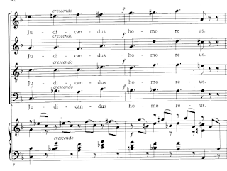
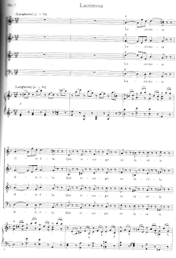
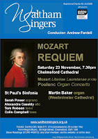
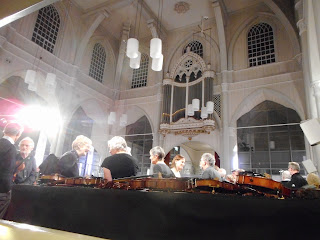

 |
| Bars 7-8 of the Lacrimosa. Mozart's last notes? |
{kind=link}
This month, however, there's no quiet place in my skull, fragments of Mozart's D minor Requiem are echoing round, as they've been doing since we began rehearsals in September. The Requiem begs for peace but these fragments are not peaceful I don't think Mozart was peaceful when he died. I think he was either rebellious or terrified, but I'm not sure which.
As everyone knows Mozart didn't finish writing the Requiem. There's good evidence to suggest that the last section he was working on, before he died, was the 'Lacrimosa'. The point where he is believed to have broken off is in bar 8 where the music builds to a chromatic, dramatic climax, then goes over the cliff edge on the words 'homo reus' = guilty man. The words are not Mozart's; they are the words of the great Latin poem the Dies Irae. It's the way he sets them that's so extraordinary and compelling. The 'Lacrimosa' follows a chilling section where the condemned sinners are depicted, cast away into the bitter flames of hell. 'Confutatis maledictis, Flammis acribus addictis.' The narrative voice pleads desperately for salvation, as it has been doing for several verses already. But it's abject and exhausted 'Cor contritum quasi cinis' = my heart as empty as a cinder.
Weeping, says the 'Lacrimosa', with apparently exquisite sweetness, is the only possible reaction because everyone will be called up from the ashes to be judged -- and everyone is guilty: 'homo reus'. Is that what Mozart, the Catholic, thought? Is that how he died, in mental anguish? I wrote the programme notes for our concert but they're rather long and it's a busy time of year. Perhaps you should just listen to the first 42 seconds of this YouTube clip and see what your ears tell you as the music builds to that high A in the soprano part, and topples down -- 'homo reus'.
 |
| Lacrimosa bars 1-6 |
{kind=link}
(Programme notes for Waltham Singers concert, Chelmsford Cathedral 23.11.2019)
Requiem in D minor KV 626
Wolfgang Amadeus Mozart (1756-1791)
completed by Franz Xavier Süssmayr (1766-1803){kind=link}

At the beginning of 1791 Mozart was living in Vienna. He was married to Constanze Weber and they had conceived five children of whom only one had survived. Constanze was again pregnant and in poor health; their relationship may have been difficult and money was short. It was, however, a year of astounding productivity. Mozart wrote a second string quintet for a Hungarian patron; completed a set of five pieces for mechanical organ; supplied his salaried quota of dance music; completed the piano concerto in Bb major and began collaborating with the theatrical impresario Emanuel Shikaneder on The Magic Flute.
Visiting Constanze at Baden in June during the last month of
her pregnancy he wrote Ave Verum Corpus
then, soon after the birth of their sixth child, Franz Xaver Wolfgang Mozart, he
dashed to Prague, accompanied by his assistant Franz Xaver Süssmayr, Constanze
(and presumably the baby). Working as they travelled, he completed La
Clemenza di Tito in just eighteen days. On his return to Vienna in
mid-September he felt ill and exhausted. He dosed himself with drastic remedies
(which may, or may not, have hastened his death) then wrote the Clarinet
Concerto in A major. He was fully involved in the rehearsals and early
performances of The Magic Flute, which
opened on September 30th 1791, but still had one major commission
outstanding.
In July a somewhat mysterious ‘man in grey’ had called on
Mozart to order a requiem. Count Franz von Walsegg’s wife had died earlier in
the year; he wanted a mass in her memory and he wanted the world to think he
had written it himself. The message was therefore conveyed by a third party and
the requiem was to be composed in strict secrecy. So far, so mundane, but as
Mozart felt increasingly ill after his return from Prague he began to believe
he had been poisoned. The nature of this commission began to prey on his mind. Although,
when he felt just a little better in November, he agreed that the poisoning had
been a product of his imagination, yet this remained a period of intense and
fluctuating emotion, both for Mozart himself and for those around him. His reported
conviction that he was writing his own requiem is psychologically credible: sadly
the music does not suggest that he became resigned to his fate.
There’s little agreement as to the cause of Mozart’s death –
except that he wasn’t poisoned by Antonio Salieri. The two composers may have been musical
rivals but were on personally amiable terms: Mozart’s last surviving letter to
Constanze in October 1791 mentions that he had given Salieri a lift to The Magic Flute and tells her how much
the older composer had enjoyed the evening.
Later Salieri would be young Franz Xaver Wolfgang Mozart’s music teacher. But
Vienna was a rumour mill, Mozart’s private life was often colourful and
speculations connected with his untimely death were passed around until the
unfortunate Salieri, living with dementia in his last years, confusedly accused
himself. Pushkin picked up on the story and wrote Mozart and Salieri, a short play on the theme of envy which portrays
the older composer slipping poison into Mozart’s wine. Nikolai Rimsky-Korsakov
repeated this in an opera, including quotes from the Requiem. For modern audiences however, the most potent fiction is
Peter Schaffer’s 1979 play Amadeus, which
became a successful film in 1984 and cast Salieri as the sinister individual
who plotted to steal the Requiem and
do away with its composer.
Both Pushkin’s and Shaffer’s Salieri was motivated by his
corrosive jealousy of Mozart’s genius. Looking at the quality as well as the
quantity of the music written during 1791 it’s an understandable reaction. Leopold Mozart, a devout Catholic, had
accepted his son’s gifts as God-given and while Mozart’s adult religious views
may have been complicated by his involvement with Freemasonry, he remained a
lifelong member of the Church. The structure of the Requiem follows the established format for a memorial Mass,
including essentials such as the Kyrie, Sanctus and Angus Dei (but no Gloria or
Credo) and additional elements; the Requiem prayer itself, the Offertory,
Benedictus and Communion. The central Sequence is a setting of the mediaeval
Latin poem, the Dies Irae, which was
also a regular feature of a Mass for the Dead. These traditional words and
concepts emerge with a new immediacy, even to listeners who have no belief in Hell
or interest in the mechanics of Judgement Day.
The effect (to my ears) is a felt-on-the-pulses expression
of the individual facing his own mortality – fear, grief, resentment – together
with a painful acknowledgement of guilt. Mozart’s father worried that his son
didn’t go often enough to Confession: today only a small minority would consider
that activity, nevertheless most of us are sufficiently self-reflective to know
how shameful our private failings and collective irresponsibility would appear
if they were considered from a truly dispassionate perspective – as at a day of
reckoning. The human consciousness at the centre of the Requiem accepts this guilt (as theology and the verses of the Dies Irae insist) but though the words
are submissive, the music remains strong. The soul awaiting judgement doesn’t
only beg for mercy; it wheedles, flatters, negotiates, pressurizes for it –
particularly through the Sequence and also in the Offertory.
There’s definite sense of an individual experiencing consciousness
throughout Mozart’s sections of the Requiem
but it’s hard to find the right definition – soul won’t really do as it’s
sometimes so corporeal. The perspective also changes: in the first movements (Introitus
& Kyrie) it’s that of an observer. The Adagio
entrance suggests the approach of a cortege: death has happened, but it is not
(yet) ours. A wave of instrumental grief threatens the emotional control but,
at the outset of this work, personal feeling can be sublimated by the activity
of pleading on behalf of others: the primary purpose of a requiem mass, just
what Mozart had been commissioned to provide. The soprano soloist offers formal
respect to God: ‘Te decet hymnus’ on behalf of former civilisations (Sion and
Jerusalem); then the chorus reminds itself that everything mortal will die. The
request for light and peace becomes correspondingly more urgent.
The impression of singers and instrumentalists piling up
their pleas is embodied both here and elsewhere by the contrapuntal construction:
voices come in one after the other all uttering the same request. Mozart was
unusual for his period in that he had studied Bach’s Art of Fugue and he had also been employed to prepare new editions
of some Handel oratorios. In the Kyrie Mozart chooses to quote the aria ‘And
with his stripes we are healed’ from the Messiah.
It’s almost a nod to the knowledgeable,
using the allusion to remind his listeners that Jesus might potentially be a
source of help. In Mozart’s version of
the fugue the second subject (Christ) is introduced very quickly, just a bar
after the first Kyrie (God the Father). The singers and instrumentalists hurry
along, confidently encouraging one another – until they almost reach a moment
of resolution…They pause, realise fully what they’ve been taking about and
launch into the Dies Irae. Throughout
this central section there’s a sense of soloists and singers sharing their
knowledge, listening to one another and eliciting increasingly personal and
confessional statements – as well as expressing their shocked reactions to the
horrors in store. The consciousness is
human and alive, not yet ready to face the possibility of eternal condemnation,
wondering whether there might not be a way out.
Death came for Mozart early in the morning of December 5th
1791 just eight bars into composing the Lacrimosa. Singing what may have been
Mozart’s final notes feels a startling experience. Bars 4 – 8 describe the
moment that guilty man is resurrected from the ashes to face judgement. It’s a
steadily rising sequence that begins as a panting struggle up the D minor scale
(quavers and rests) then continues past the tonic note, moving loudly and chromatically
up to a high dominant A. To my ears the words at the peak of the scale, ‘homo
reus’ (guilty man) sound both anguished and defiant – or is that simply
terrified? The setting of the word ‘lacrimosa’, flowing and dissolving, brings
a sense of mourning and human grief. Strictly speaking ‘lacrimosa’ applies to
the Day, not the people, yet the lilting beauty of this music opens emotional
floodgates.
Mozart’s method of composition was to sketch out lines and
overall shapes of sections in advance, then return to them and fill in the
orchestrations etc. There is therefore plenty of authentic Mozart still to come
after the beginning of the Lacrimosa. He had already sketched out the Offertory
and may have suggested the idea that the ending of the work should be a return
to the opening plea (though this is disputed). In more recent years a scrap of
an Amen has been discovered which might have been intended to come between the
Lacrimosa and Dominus Deus. Constanze Mozart, intent on establishing the
authenticity of her husband’s work, claimed there were other fragments (‘Trummer’)
which guided Franz Xaver Süssmayr’s completion of the Requiem in 1792.
Süssmayr had been living and working closely with Mozart and
his family, assisting as copyist for both The
Magic Flute and La Clemenza di Tito
(for which he also wrote the recitatives). He’d played through and discussed
parts of the Requiem with Mozart, and
might perhaps have been told about ideas for its continuation and overall shape.
The strong liturgical basis must also have helped. Süssmayr had previously spent eight years as a
chorister and instrumentalist in a Benedictine monastery where he had gained
experience in composing as well as performing church music. Bizarrely he was
not Constanze’s first choice to finish the work: she turned to him only after
other composers had tried and failed. There were, it seems, relationship issues
(‘I was angry with Süssmayr’). The completion of the Lacrimosa, together with the
Sanctus, Benedictus and Angus Dei and the orchestration of most of the Dies Irae– totalling about 1/3 of the Requiem – is Süssmayr’s, an achievement
which deserves to be recognised, though it is fair to say that his sections of
the work are noticeably less conflicted than those written by the terminally
ill Mozart.
Mozart’s body was buried in the city’s common grave on
December 7th 1791 – and the 37 year old Süssmayr joined him in
1803. On December 11th 1791 Constanze successfully appealed for a
pension from the emperor. Though she may have allowed personal considerations
to discourage her from immediately asking Süssmayr to complete the Requiem, in general her business sense
seems to have been shrewd. There was no chance of Count von Walsegg taking
advantage. She was careful with her
husband’s unpublished manuscripts, careful with his reputation – though perhaps
some of those rumours about possible causes for his sudden death might have encouraged
people to support the benefit concerts arranged for her and her children.
Constanze married again in later life and was Mozart’s first biographer. The baby, Franz
Xaver Wolfgang, became a composer.
 |
| Francis and I did attend one concert while we were away. This was in Amsterdam where the orchestra included an unscheduled piece by the Czech composer Pavel Haas. The announcer explained that Haas had been filmed conducting this in Theresienstadt as part of a documentary depicting humane conditions there. The following week (autumn 1944) he was deported to Auschwitz where he was murdered. |
{kind=link}